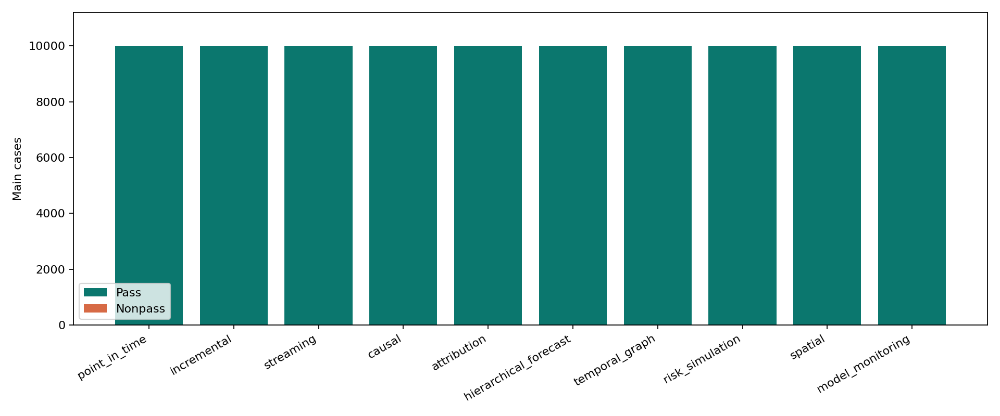
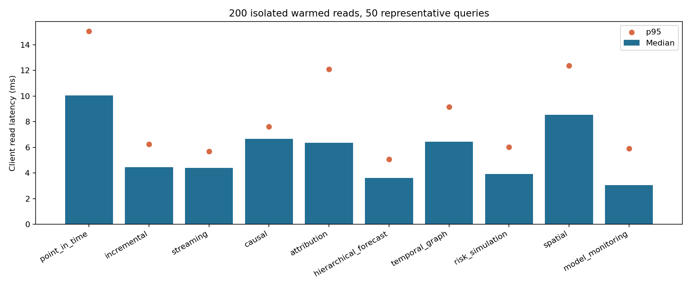

每类 10 个子流程 × 1,000 个参数配置。每例 MO 完整返回值及科学计算结果均进行交叉校验。详细 SQL、参数、预期/实际输出见下列原始 JSONL 文件。
报告 JSON · 100 个流程及 SQL 示例 · 主批次结果


筛选独立 case ID / 场景 / 客户端。页面每次只显示 100 行，全部索引在浏览器中。
| ID | 场景 / 子流程 | 参数 | 状态 | 客户端 | MO ms | 原始记录 |
|---|
这是合成数据下的兼容性验证；不代表十万种算法、生产模型质量或生产规模吞吐率。Spark/Flink 补测与 200 次独立性能读测单列，未计入主 case。